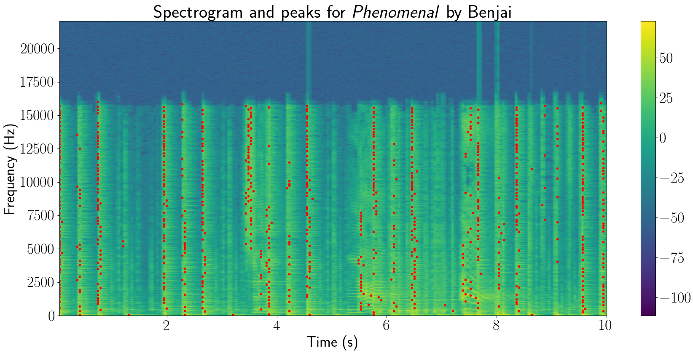
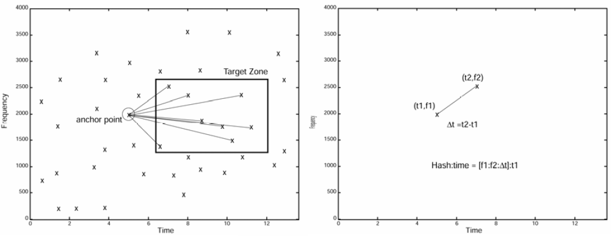
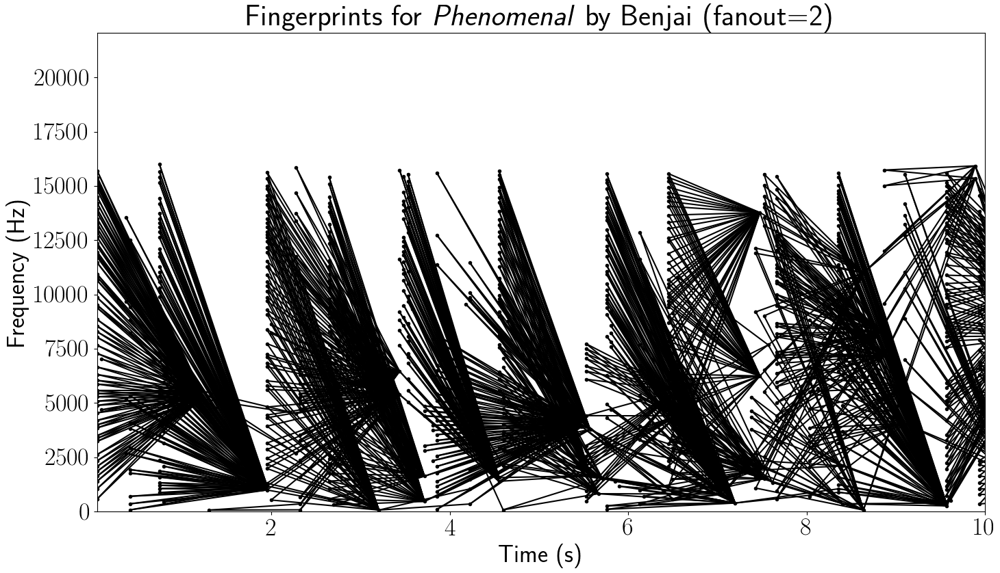
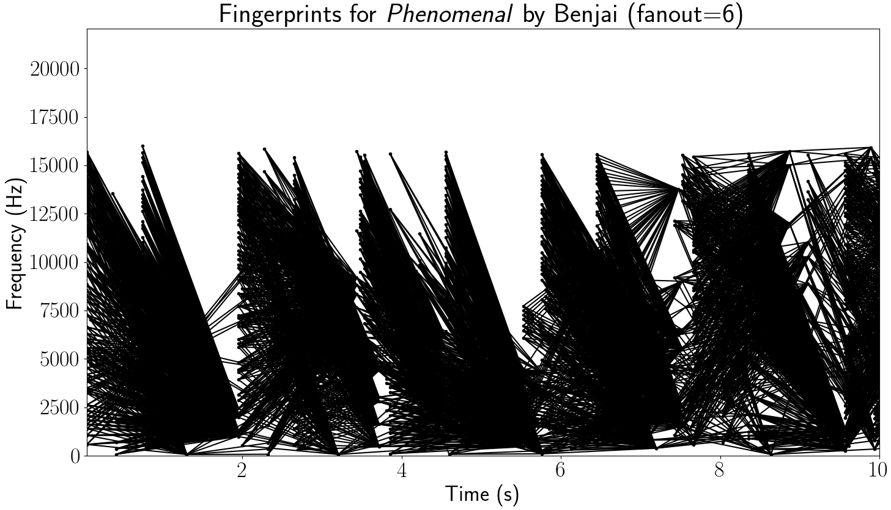

Audio Fingerprinting¶
Audio fingerprinting refers to the act of turning audio into a set of hashes. The first step of this process involves obtaining the spectrogram of the song/audio, which is effectively a measure of the intensity of the sound frequencies of the audio over the course of the song. The spectrogram of the song Phenomenal by Benjai is shown below.
Note
The images in this section were generated by the yamfp command line tool.
Next, we find the peaks in the spectrogram, i.e., the points in the spectrogram with the greatest amplitude. The spectrogram for the first 10 seconds of the song is shown below, with the peaks represented by red dots.
The song’s fingerprints are generated from pairs of peaks in a process known as combinatorial hashing, in which we iterate through the peaks and, for each peak, pair it with its neighbors. The number of neighbors we consider is termed the fanout value. This is shown in the figures below, which are taken from the paper by Avery Wang, the founder of Shazam (see Acknowledgments).
The figure defines a “target zone” that determines which neighbors to consider for each peak. Each peak pair is used to generate a hash based on the frequency and time difference between each point—this constitutes a fingerprint. If we use a target zone of +1 s to +10 s (and no restriction on the frequency) with a fanout value of 2, the first 10 seconds of the song generate the following hash constellation:
If we increase the fanout value to 6, it looks more like the following:
Increasing the fanout value results in more hash pairs, increasing the robustness of the fingerprints but also increasing storage requirements and computation time to find matches, since there can be tens or hundreds of thousands of hash pairs for an entire song.
More on the algorithm used to match audio fingerprints to fingerprints in the
database can be found in the paper and in the source code (see
youtube_audio_matcher.audio.align_matches()).